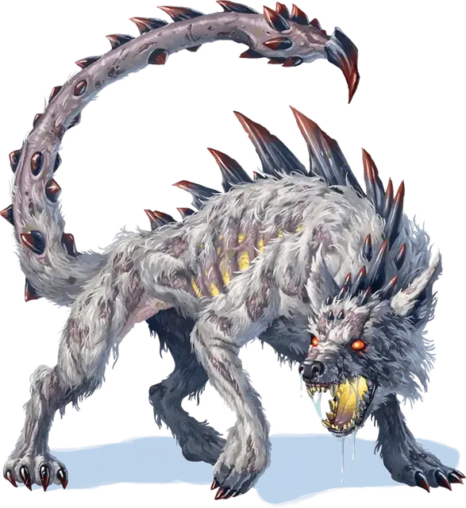

Шусува
Shoosuva
Большое Исчадие (Демон), обычно хаотично-злое

Класс Доспеха 14 (природный доспех)
Хиты 136 (16к10 + 48)
Скорость 40 футов
| мод | спас | ||
|---|---|---|---|
| СИЛ | 18 | +4 | +4 |
| ЛОВ | 13 | +1 | +4 |
| ТЕЛ | 17 | +3 | +6 |
| мод | спас | ||
|---|---|---|---|
| ИНТ | 7 | −2 | −2 |
| МДР | 14 | +2 | +5 |
| ХАР | 9 | −1 | −1 |
Сопротивление урону огонь, холод, электричество
Иммунитет к урону яд
Иммунитет к состояниям отравление, очарование, испуг
Чувства тёмное зрение 60 футов, пассивное Восприятие 12
Языки Бездны, Гноллий, Телепатия 120 фт.
Опасность 8 (3900 опыта)
Бонус мастерства +3
Среда обитания Лес, Луг, Побережье, Холмы
Действия
Мультиатака. Шусува совершает одну атаку Укусом и одну атаку Хвостовым жалом.
Укус. . Рукопашная атака оружием: +7 к попаданию, досягаемость 5 футов, одна цель. Попадание: 26 (4к10 + 4) колющего урона.
Хвостовое жало. . Рукопашная атака оружием: +7 к попаданию, досягаемость 15 футов, одно существо. Попадание: 13 (2к8 + 4) колющего урона, и цель должна преуспеть в спасброске Телосложения Сл 14, иначе станет отравленной. Если цель отравлена, она считается парализованной. Цель может повторять спасбросок в конце каждого своего хода, окончивая на себе эффект при успехе.
Бонусные действия
Буйство. Снижая хиты существа до 0 рукопашной атакой в свой ход, шусува может переместиться на половину своей скорости и совершить атаку Укусом.
Описание
“Что? Вы ожидаете, что я буду комментировать этих существ? Отлично, как это: верный питомец заслуживает верного питомца.”
— Морденкайнен
“Доверься Морденкайнену, чтобы он смотрел свысока на любое дружеское общение — даже со слюнявым, ядовитым, демоническим щенком”.
— Таша
Шусува – это демон–гиена, которую дарит Йеногу особенно могущественному последователю (обычно гнолл клык Йеногу [gnoll fang of Yeenoghu]). Шусува появляется вскоре после того, как боевая банда одержит большую победу, выходя из клубящегося зловонного облака дыма, прибывая из Бездны. В битве демон хватает своими огромными челюстями одну жертву, тем временем втыкая ядовитое жало на своем хвосте в другую. Обездвиженное ядом существо становится легкой жертвой для любого члена боевого отряда поблизости.
Каждая шусува привязывается к конкретному последователю Йеногу и сражается бок о бок со своим хозяином. Гнолл, одаренный шусувой, по статусу в боевой банде уступает только флинду.